Next: Numerics Up: Introduction Previous: Introduction Contents
For example, the surface slopes
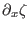 and
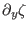 representing the barotropic pressure-gradients may
be determined by means of local observations or results from
three-dimensional numerical models. It is also possible to prescribe a
time series of the near-bed velocity components for reconstructing the
barotropic pressure gradient, see Burchard (1999). The
implementation of these options for the external pressure gradient is
carried out in extpressure.F90, described in
section 3.2.8. The internal pressure-gradient, which results
from horizontal density gradients, can be prescribed from observations
of horizontal gradients of and  or from three-dimensional
model results (see intpressure.F90 in section 3.2.9).
These gradients may also be used for horizontally advecting
and
or from three-dimensional
model results (see intpressure.F90 in section 3.2.9).
These gradients may also be used for horizontally advecting
and  (see section 3.2.11 and section 3.2.12).
(see section 3.2.11 and section 3.2.12).
Another option in GOTM for parameterising the advection of
and  is to relax the model results to observations. Evidently, this
raises questions about the physical consistency of the model, but it
might help to provide a more realistic density field for studies of
turbulence dynamics. Nudging is also possible for the horizontal
velocity components. This makes sense in order to initialise inertial
oscillations from observed velocity profiles, see section 3.2.6
and section 3.2.7. In the momentum equations, advection and
horizontal diffusion terms are neglected.
is to relax the model results to observations. Evidently, this
raises questions about the physical consistency of the model, but it
might help to provide a more realistic density field for studies of
turbulence dynamics. Nudging is also possible for the horizontal
velocity components. This makes sense in order to initialise inertial
oscillations from observed velocity profiles, see section 3.2.6
and section 3.2.7. In the momentum equations, advection and
horizontal diffusion terms are neglected.
In hydrostatic ocean models, the vertical velocity is calculated by
means of the continuity equation, where the horizontal gradients of
 and 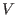 are needed. Since these are not available or set to zero,
the assumption of zero vertical velocity would be consistent. In many
applications however, a non-zero vertical velocity is needed in order
to reflect the vertical adiabatic motion of e.g. a thermocline. In
GOTM, we have thus included the option of prescribing a vertical
velocity time series at one height level which might be vertically
moving. Vertical velocities at the surface and at the bottom are
prescribed according to the kinematic boundary conditions (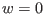 at
the bottom and
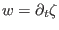 at the surface), and between these
locations and the prescribed vertical velocity at a certain height,
linear interpolation is applied, see updategrid.F90 in
section 3.2.4. This vertical velocity is then used for the
vertical advection of all prognostic quantities.
and 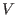 are needed. Since these are not available or set to zero,
the assumption of zero vertical velocity would be consistent. In many
applications however, a non-zero vertical velocity is needed in order
to reflect the vertical adiabatic motion of e.g. a thermocline. In
GOTM, we have thus included the option of prescribing a vertical
velocity time series at one height level which might be vertically
moving. Vertical velocities at the surface and at the bottom are
prescribed according to the kinematic boundary conditions (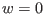 at
the bottom and
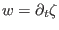 at the surface), and between these
locations and the prescribed vertical velocity at a certain height,
linear interpolation is applied, see updategrid.F90 in
section 3.2.4. This vertical velocity is then used for the
vertical advection of all prognostic quantities.
Standard relations according to the law of the wall are used for deriving bottom boundary conditions for the momentum equations (see friction.F90 in section 3.2.10). At the sea surface, they have to be prescribed or calculated from meteorological observations with the aid of bulk formulae using the simulated or observed sea surface temperature (see section 5.2). In stratification.F90 described in section 3.2.15, the buoyancy 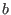 as defined in equation (33) is calculated by means of the UNESCO equation of state (Fofonoff and Millard (1983)) or its linearised version. In special cases, the buoyancy may also be calculated from a simple transport equation. stratification.F90 is also used for calculating the Brunt-Väisälä frequency, 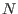.
The turbulent fluxes are calculated by means of various different turbulence closure models described in great detail in the turbulence module, see section 4.7. As a simplifying alternative, mixing can be computed according to the so-called `convective adjustment' algorithm, see section 3.2.16.
Furthermore, the vertical grid is also defined in the meanflow module (see updategrid.F90 in section 3.2.4). Choices for the numerical grid are so-called 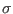-coordinates with layers heights having a fixed portion of the water depth throughout the simulation. Equidistant and non-equidistant grids are possible.
Karsten Bolding 2012-01-24